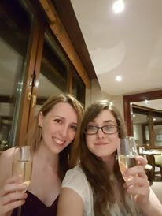

We’re still working on this section. Check back after you have received your invitation!
However, if you have received your 'save the date' and already know you can’t make it, please contact us as soon as possible.


The Dickens Inn, Marble Quay, St Katharine's Way, St Katharine's & Wapping, London E1W 1UH
 If you are coming by taxi the closest drivable road is Mews Street by Mala Indian Restaurant. It is then around a 60m walk to the venue.
If you are coming by taxi the closest drivable road is Mews Street by Mala Indian Restaurant. It is then around a 60m walk to the venue.  Tower Hill on the District and Circle underground lines. It is then an 8 minute walk to the venue. Fenchurch Street Railway Station on the Mainline. It is then a 9 minute walk to the venue. Tower Gateway on the DLR. It is then a 7 minute walk to the venue.
Tower Hill on the District and Circle underground lines. It is then an 8 minute walk to the venue. Fenchurch Street Railway Station on the Mainline. It is then a 9 minute walk to the venue. Tower Gateway on the DLR. It is then a 7 minute walk to the venue. The 100 stops at Stockholm Way, Nesham Street and The Highway which are all a 5 minute walk from the venue. The RV1 stops at The Tower of London (Stop TH) which is a 6 minute walk to the venue The 42 and 78 both stop at Tower Bridge City Hall which is a 9 minute walk to the venue The 343 stops at City Hall which is an 11 minute walk to the venue The 188 stops at Druid Street which is a 12 minute walk to the venue
The 100 stops at Stockholm Way, Nesham Street and The Highway which are all a 5 minute walk from the venue. The RV1 stops at The Tower of London (Stop TH) which is a 6 minute walk to the venue The 42 and 78 both stop at Tower Bridge City Hall which is a 9 minute walk to the venue The 343 stops at City Hall which is an 11 minute walk to the venue The 188 stops at Druid Street which is a 12 minute walk to the venue Nearest ferry stop is St Katherines Pier, served by Thames River Services and Circular Cruises. It is then a 3 minute walk to the venue.
Nearest ferry stop is St Katherines Pier, served by Thames River Services and Circular Cruises. It is then a 3 minute walk to the venue. Wombat’s City Hostel London - £44. Hostel with free Wi-Fi and bar. Travelodge London Central Aldgate East Hotel - £69. 3-star hotel with dining and bar. Travelodge London Central Tower Bridge - £79. 3-star hotel with dining and bar. The Tower Hotel - £82. 4-star riverside hotel. Premier Inn London City Tower Hill - £103. 3-star hotel. Grange Tower Bridge Hotel - £122. 5-star hotel with pool and dining. Hilton London Tower Bridge - £127. 4-star hotel with Italian dining. The Lalit London - £145. 5-star hotel with Indian Restaurant. Cheval Three Quays - £204. 5-star hotel overlooking the river.
Wombat’s City Hostel London - £44. Hostel with free Wi-Fi and bar. Travelodge London Central Aldgate East Hotel - £69. 3-star hotel with dining and bar. Travelodge London Central Tower Bridge - £79. 3-star hotel with dining and bar. The Tower Hotel - £82. 4-star riverside hotel. Premier Inn London City Tower Hill - £103. 3-star hotel. Grange Tower Bridge Hotel - £122. 5-star hotel with pool and dining. Hilton London Tower Bridge - £127. 4-star hotel with Italian dining. The Lalit London - £145. 5-star hotel with Indian Restaurant. Cheval Three Quays - £204. 5-star hotel overlooking the river.
 Olivia Robson
Olivia Robson Dani Best
Dani Best Adam Dowden
Adam Dowden